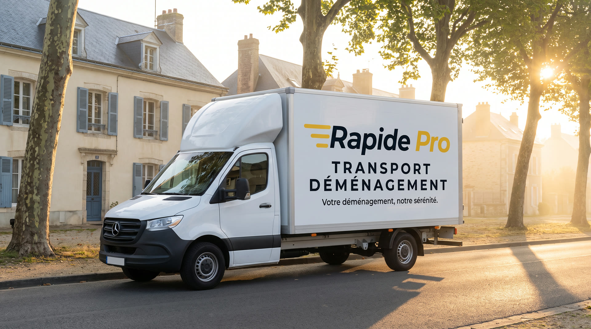
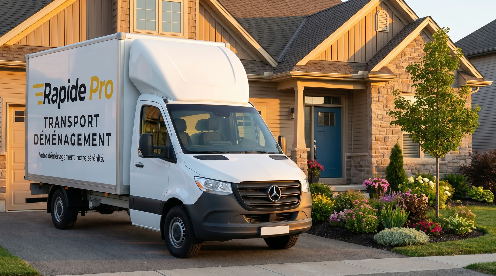
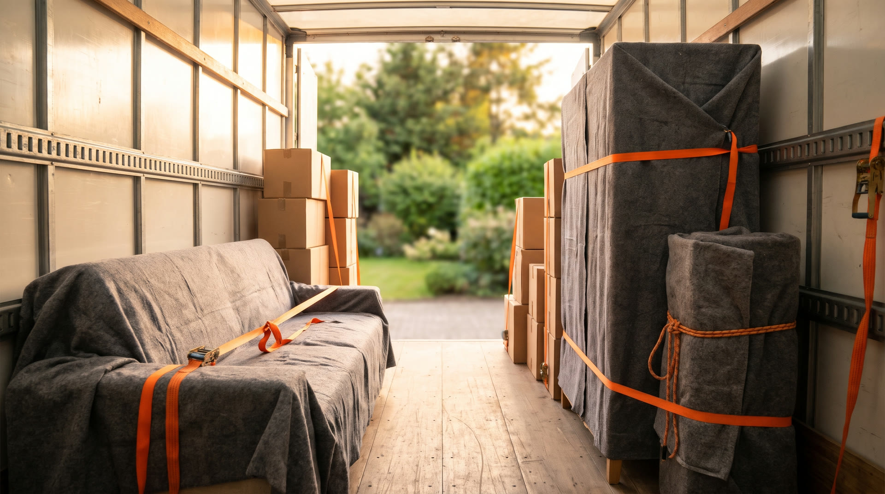

Votre déménagement, notre sérénité.
Devis gratuit en moins de 2 minutes depuis votre téléphone, puis un devis écrit prêt à signer en 10 à 15 minutes.
- Gratuit et sans engagement
- Visite à domicile offerte
- Un seul interlocuteur
- Société immatriculée au RCS de Pontoise
- SIREN 928 359 082
- Basée à Deuil-la-Barre (95)
- Devis écrit en 10 à 15 minutes
Un déménagement sans stress.
Rapidité
On vous répond vite, et votre devis arrive en 10 à 15 minutes, prêt à signer.
Soin
Cartons, meubles, objets fragiles : protégés, emballés, manipulés avec attention.
Accompagnement
Un seul interlocuteur, du devis jusqu'à la dernière pièce installée.
Que voulez-vous déménager ?

Chaque meuble protégé, sanglé, calé.
Couvertures, sangles, cartons adaptés : vos affaires voyagent comme si elles étaient les nôtres.
De votre demande à la dernière pièce.
- Vous faites votre demandeEn moins de 2 minutes, depuis votre téléphone.
- Un responsable peut passer chez vousLa visite à domicile est offerte, pour vous conseiller.
- Vous recevez votre devisÉcrit, prêt à signer, en 10 à 15 minutes.
- Le jour J, on s'occupe de toutVous arrivez, tout est là, tout est rangé.
Votre devis en moins de 2 minutes
Sept questions, puis un vrai devis écrit, prêt à signer en 10 à 15 minutes.
Vos questions, nos réponses.
En combien de temps je reçois mon devis ?
Une fois votre demande envoyée, comptez 10 à 15 minutes : on calcule, puis on vous envoie un devis écrit, prêt à signer.
Comment se passe la signature et le paiement ?
Votre devis est écrit, accompagné des conditions générales. Les conditions de paiement y figurent noir sur blanc : vous les lisez avant de signer.
Quelqu'un peut-il venir chez moi avant ?
Oui. La visite à domicile est offerte : un responsable vient, voit vos affaires et vous conseille.
Dans quelles villes intervenez-vous ?
Nous sommes basés à Deuil-la-Barre, dans le Val-d'Oise (95). Nous intervenons en Île-de-France et partout en France.
Déménagez-vous aussi les entreprises ?
Oui : bureaux, commerces, transferts de salariés. Voir la page Professionnels.